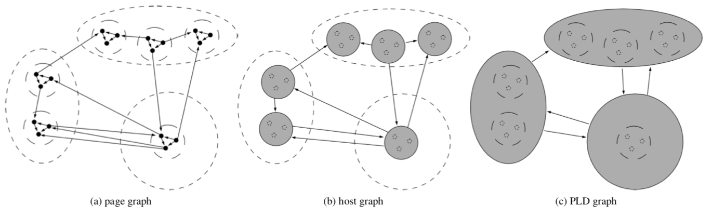

First glance question: What is "bow-tie structure"? What is power law?
motivation:
1. we can gather evidence for the social phenomena governing the growth of the Web.
2. the design of exogenous ranking mechanisms (i.e., based on the links between pages) can benefit
from deeper knowledge of the web graph.
3. the very process of crawling the Web can be made more efficient using information about its structure.
4. detect rank manipulations such as spam networks.
The paper analyzed from three different levels (page, host and pay-level domain).
Problem for today's web dataset.